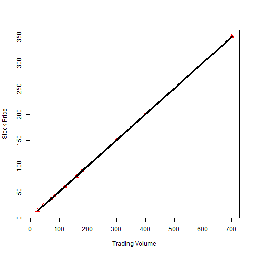

Data Product Student
pTr<-c(80.75,200.75,90.75,60.75,22.75,150.75,350.75,13.25,36.25,42.25,80.75,200.75,90.75,
60.75,22.75,150.75,350.75,13.25,36.25,42.25,80.75,200.75,90.75,60.75,22.75,150.75,
350.75,13.25,36.25,42.25)
vTr<-c(160,401,180,120,44,300,700,25,71,83,161,400,180,120,44,300,700,25,71,83,160,400,
180,120,44,301,701,25,71,83)
fit<-lm(pTr~vTr)
fit
##
## Call:
## lm(formula = pTr ~ vTr)
##
## Coefficients:
## (Intercept) vTr
## 0.7478 0.4997
plot(vTr,pTr,pch=24,col="red",xlab="Trading Volume",ylab="Stock Price")
lines(vTr,fit$fitted,lwd=3)

pTest<-c(88.29,43.9,46.3,351,451); vTest<-c(175,86,91,700,900)
round(predict(fit,data.frame(vTr=vTest)),2)
## 1 2 3 4 5
## 88.19 43.72 46.22 350.53 450.47
sqrt(sum((fit$fitted-pTr)^2)); sqrt(sum((predict(fit,data.frame(vTr=vTest))-pTest)^2))
## [1] 0.8681739
## [1] 0.7408832